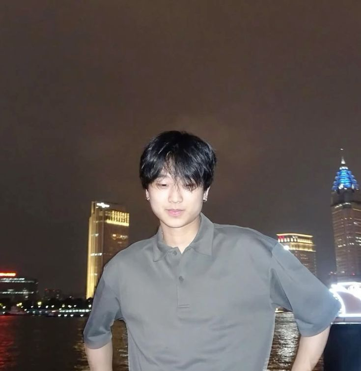

yung kai
Penyanyi & produser asal Kanada, pencipta lagu "Blue"
yung kai, nama panggung dari Max Zhang, adalah penyanyi dan penulis lagu Kanada keturunan Tionghoa yang besar di Vancouver. Sejak kecil ia sudah akrab dengan drum, piano, dan gitar sebelum mulai memproduksi lagunya sendiri.
"Blue" ditulis saat ia sedang menonton drama Tiongkok bersama seseorang yang ia sukai. Lagu ini menjadi viral di media sosial dan membawanya dikenal luas di industri musik pop masa kini.
Asal: Vancouver, Kanada
Genre: Indie Pop
Dengarkan lagunya →